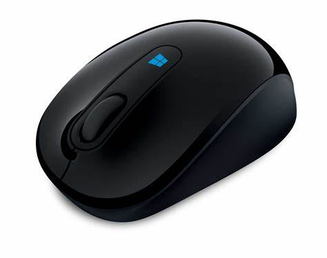
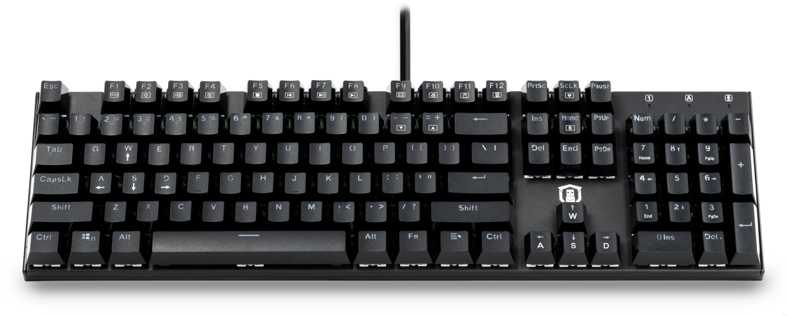
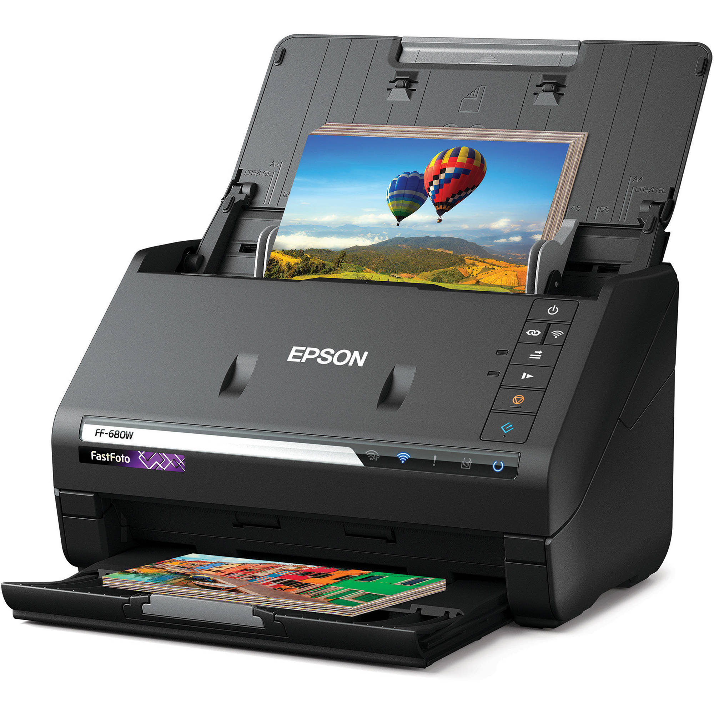
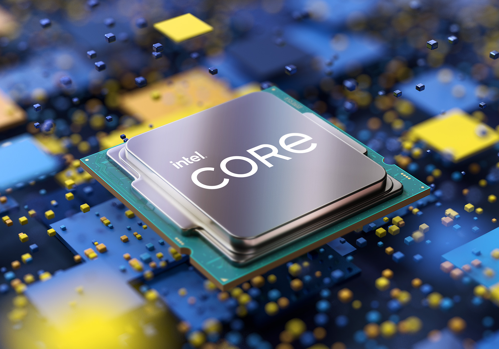
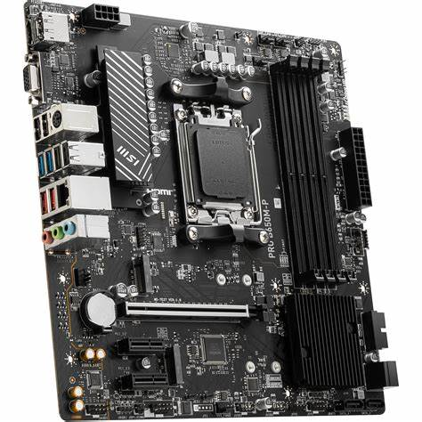
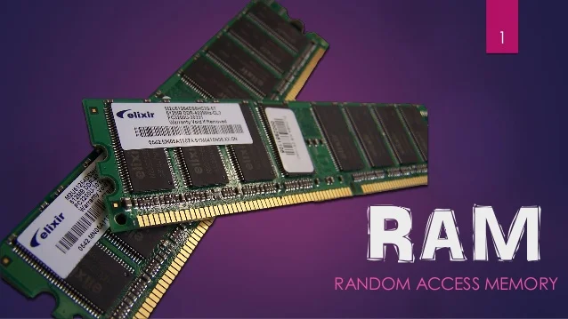
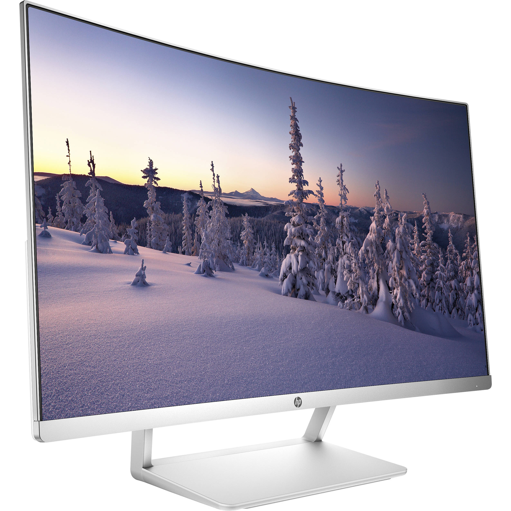
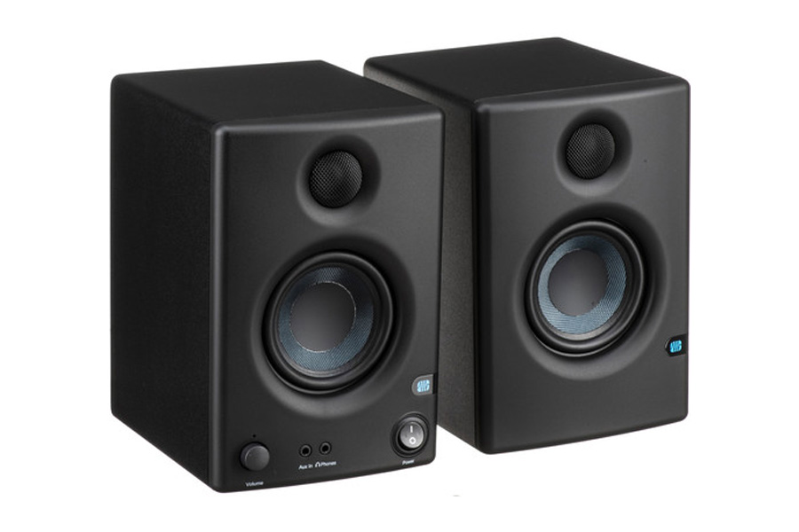

Perangkat Keras
Kelompok Tugas Minggu ke-12 / 13
Selamat Datang
Nama Anggota Kelompok :
1. Aditya Julian
2. Gilang Permana Putra
3. Rizki Indera Jati
Peralatan Input
Peralatan input digunakan untuk memasukkan data ke dalam komputer. Berikut penjelasan masing-masing perangkat:
- Mouse : Alat yang digunakan untuk menggerakkan kursor pada layar komputer. Mouse juga digunakan untuk memilih, menyeret, dan mengklik elemen pada layar.
 - Keyboard : Perangkat untuk mengetik data berupa huruf, angka, atau simbol ke dalam sistem komputer.
 - Scanner : Digunakan untuk memindai dokumen atau gambar dan mengubahnya menjadi format digital yang dapat dibaca komputer.

Peralatan Pemrosesan
Peralatan pemrosesan bertanggung jawab untuk mengolah data yang diterima dari perangkat input. Berikut detailnya:
- CPU : Central Processing Unit adalah otak komputer yang mengolah instruksi dan data yang diberikan oleh perangkat input.
 - Motherboard : Papan utama yang menghubungkan semua komponen komputer, termasuk CPU, RAM, dan perangkat keras lainnya.
 - RAM : Random Access Memory menyimpan data sementara saat komputer sedang bekerja. Semakin besar kapasitas RAM, semakin cepat komputer dapat memproses data.

Peralatan Output
Peralatan output digunakan untuk menampilkan hasil dari data yang telah diproses oleh komputer. Berikut penjelasannya:
- Monitor : Layar yang digunakan untuk menampilkan teks, gambar, atau video hasil pemrosesan komputer.
 - Printer : Perangkat yang mencetak dokumen atau gambar ke atas kertas.

- Speaker : Speaker atau pengeras suara adalah salah satu komponen penting dalam sistem audio. Speaker berfungsi untuk mengubah sinyal listrik menjadi gelombang suara yang dapat didengar oleh manusia.
